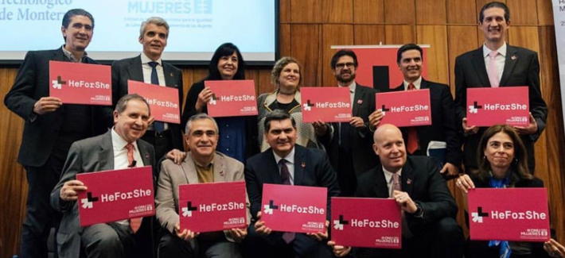

- En enero de 2019 nos unimos a la iniciativa HeForShe a través de
la firma de 9
compromisos hacia la igualdad de género.
- La firma fue realizada por Salvador Alva, Presidente del
Tecnológico de Monterrey y
Belén Sanz, representante de ONU Mujeres en México.

Compromisos
- Desarrollo del Plan de Igualdad de Género
para el Tecnológico de Monterrey
- Implementar puntos de atención en los
campus para la prevención y atención de la violencia de género
- Fortalecimiento y mejora continua del
Protocolo de Violencia de Género vigente a nivel nacional
- Formación en igualdad de género y
prevención de la violencia para toda la comunidad Tec
- Promover la cultura de igualdad de
oportunidades en todos los procesos requeridos para lograr el
desarrollo y crecimiento de las mujeres
- Desarrollo de las mujeres en carreras de
ciencias tecnología, ingeniería y matemáticas
- Incrementar número de grupos estudiantiles
que promuevan la cultura de igualdad y prevención de la violencia de
género
- Promover aportaciones académicas en materia
de género
- Desarrollar un grupo de trabajo en un
consorcio internacional acerca de la igualdad de género en
universidades